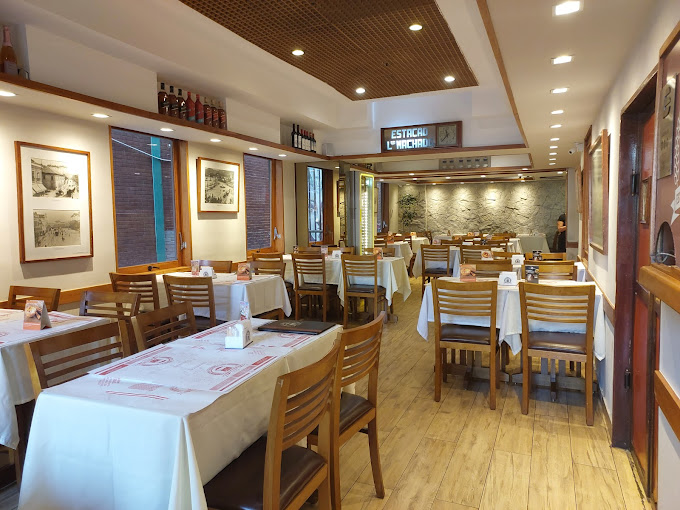

Localizado na histórica Rua Bento Lisboa, a 50 metros do metrô. Chopp Brahma trincando de gelado, carnes nobres na brasa, a consagrada feijoada completa, 24 opções de almoço executivo diário e uma carta autoral de drinks inspirada no Catete.
992 avaliações no Google
60 anos de tradição
Todos os dias

Mesas acolhedoras, clima clássico de boteco e chopp estupidamente gelado.
Tulipa e caldereta a R$ 10,90 tiradas com colarinho aveludado na temperatura certa, além de cervejas 600ml de Spaten e Stella.
Servidos durante todo o horário, das 11h à meia-noite. Pratos completos com fartura, carnes, frangos, peixes e massas a partir de R$ 29,90.
A famosa Feijoada Completa do Largo do Machado, o Filé à Oswaldo Aranha coberto de alho crocante e o Cozido de Domingo.
Atendimento ágil para Catete, Largo do Machado, Flamengo, Glória e Laranjeiras direto pelo WhatsApp sem burocracia.
Receitas passadas com rigor e afeto há quase seis décadas no Largo do Machado.
Feijão preto enriquecido lentamente com carnes nobres selecionadas (carne seca, lombo, costelinha, paio e calabresa). Acompanha arroz solto, couve mineira refogada fininha no alho, farofa na manteiga, torresmo pururuca estalando de crocante e laranjas frescas.
A verdadeira celebração do almoço de domingo. Carnes nobres suculentas, legumes variados frescos da estação (batata, cenoura, abóbora, repolho, banana da terra) cozidos lentamente no próprio caldo aromático e servidos com pirão aveludado artesanal.
Use a busca instantânea ou filtre por categoria para montar seu pedido em segundos.
Homenagens líquidas a Machado de Assis, Aterro do Flamengo, Clarisse Índio do Brasil e Cássia Eller.
Amoras frescas maceradas, xarope de rosas nobre, toque sutil de tabasco, Gin Beefeater Rosê, água tônica e finalizado com aveludada espuma artesanal de morango.
Gin Beefeater, licor fino de pêssego, xarope artesanal de maracujá, espumante brut geladíssimo e finalizado com cremosa espuma de gengibre.
Polpa de maracujá fresco, xarope de manga, Gin Beefeater Tropical, água tônica e inesquecível espuma brasileira de rapadura.
Rua Bento Lisboa, 184
O coração boêmio e tradicional do Catete
O restaurante mais tradicional do bairro, situado na Rua Bento Lisboa, 184, de fácil acesso e a poucos passos do Metrô do Largo do Machado. A gastronomia carioca é a nossa essência: seja para compartilhar momentos em família aos domingos ou para desfrutar de um almoço executivo dinâmico, farto e saboroso no intervalo do trabalho.
Aqui, a cerveja chega sempre na temperatura certa, o chopp é servido com colarinho aveludado e o cardápio abraça desde carnes nobres grelhadas até feijoada completa, peixes frescos, massas italianas, petiscos e pizzas crocantes.
Com base em 992 depoimentos verificados no perfil oficial do restaurante.
"Ótimo atendimento e comida muito boa. A feijoada e o filé à Oswaldo Aranha são impecáveis. Um dos melhores pontos do Largo do Machado!"
"We had a lovely lunch! The steak was delicious and the staff were very friendly and attentive. Great traditional atmosphere in Rio."
"Chopp Brahma estupidamente gelado e o bolinho de bacalhau crocante por fora e macio por dentro. Clássico boteco carioca nota 10."
"O almoço executivo salva a rotina! Preço justo, pratos muito bem servidos e sabor caseiro de verdade. Atendimento impecável."
A apenas 50 metros da estação de Metrô Largo do Machado.
Largo do Machado / Catete, Rio de Janeiro - RJ
Rua Bento Lisboa, 184 — CEP 22221-011
✓ Saída fácil pelo Metrô Largo do Machado (menos de 1 minuto a pé).
Todos os dias sem exceção
Segunda a Domingo: 11:00 às 00:00 (Meia-noite)
Almoço Executivo servido o dia inteiro durante todo o horário.
Formas de Pagamento:
Pix, Dinheiro, Débito, Crédito e Cartões de Refeição (Sodexo, VR, Alelo, Ticket).